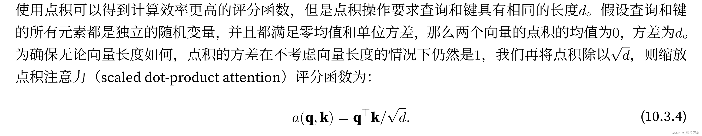
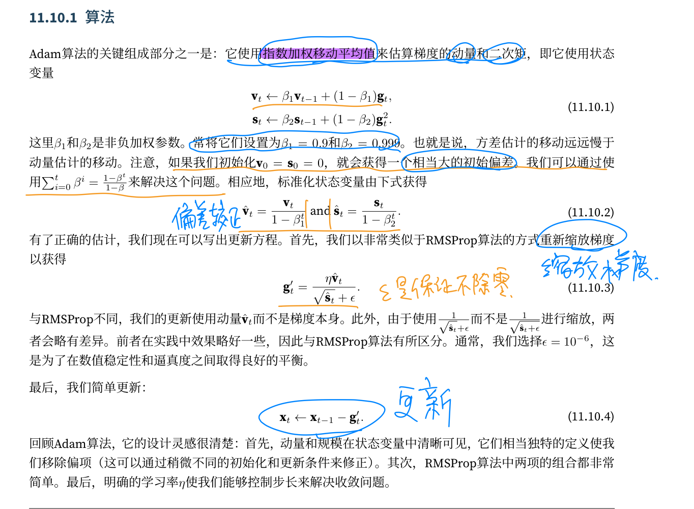
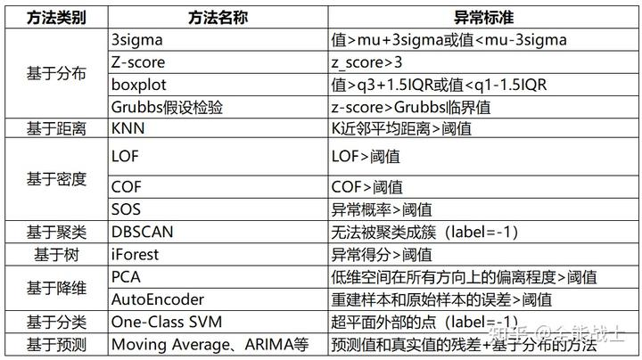
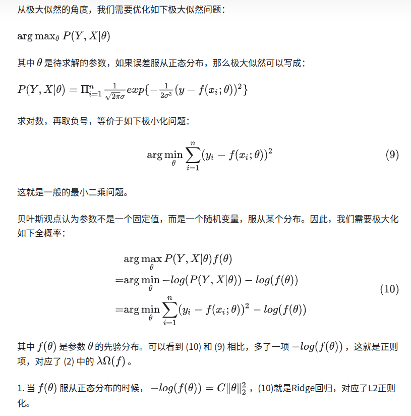
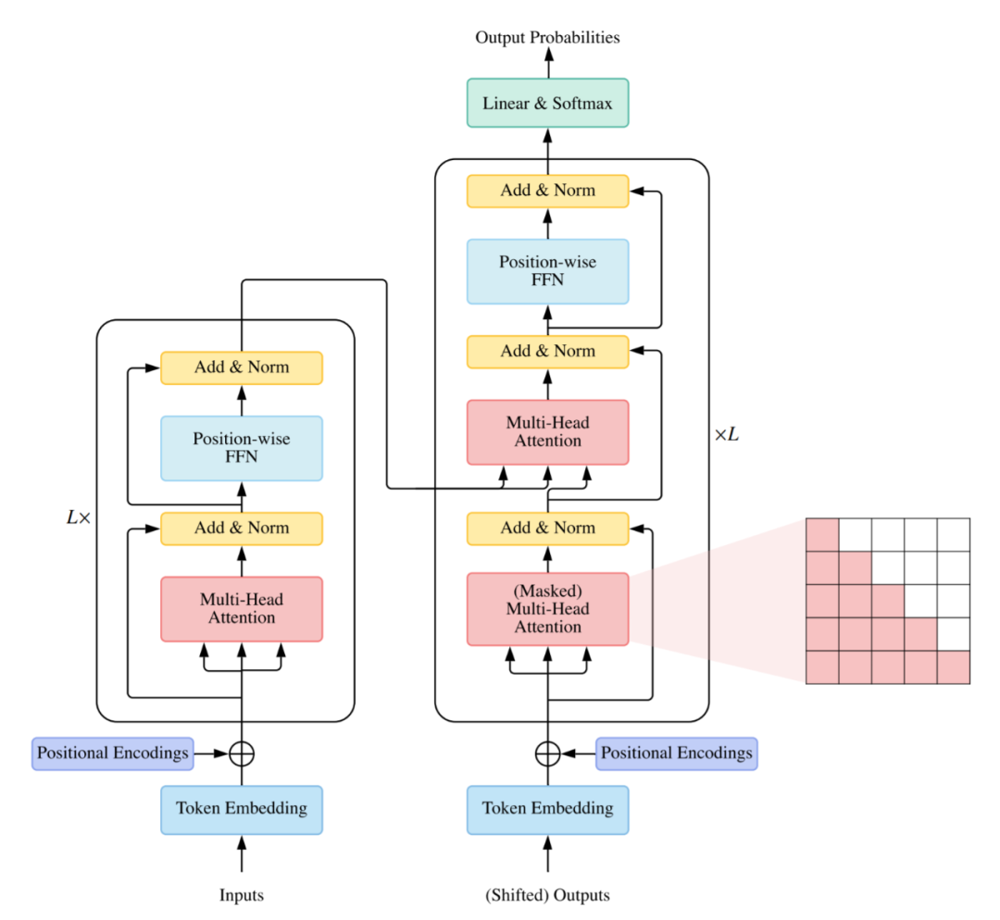

cykjPreparation
最终面试没过，分析可能的原因：
- 做多肽的岗位，但是自己多肽的项目没做很多事情（面试的时候自我介绍结束之后第一个就问多肽那个项目，应该比较在意）
- 知识图谱冷启动合并数据答的不好
把drugbank和训练数据中的数据分别都分成训练，测试，验证集
保证drugbank的测试集和验证集中没有训练集中未出现的节点（isin）
分别对应合并训练，测试，验证集。合并之后保证训练集中没有测试集中完全一致的三元组，保证验证集中也没有测试集中完全一致的三元组
最后预测的时候实在没有的就去掉na的数据，预测就是简单把头尾emded相加作为feat
- 可能因为自己还是研0，岗位要求的是在读硕博（面试最后问了自己是否是在读研一）
position
岗位描述:
- 参与
蛋白质、多肽相关的深度学习算法设计，如蛋白-蛋白相互作用，多肽-蛋白质相互作用，结合位点预测，亲和力预测等模型；- 跟进领域最新进展，能够
完成文章的复现和深度理解；- 协助算法开发的
前期数据清洗，预处理，特征提取工作。
任职要求：
1.在读硕士或博士，计算机类（人工智能、数据科学与大数据技术等）、统计学、应用数学、生物信息等相关专业；- 熟悉机器学习、深度学习相关模型与算法且有一定广度，包括但不限于
Python, Pytorch, Transformer, CNN, GCN；- 有药物设计、蛋白质设计、蛋白质结构预测等相关工作经验者优先考虑；
- 有使用生物数据库经验者优先考虑，包括但不限于
UniProt, GENCODE, UK Biobank, Protein Data Bank, PDBbind, BindingDB；- 在生物信息学或人工智能相关期刊或会议上发表相关论文优先考虑，认可的期刊/会议包括但不限于
Bioinformatics, Nature Communications, AAAI, ICML, CVPR, ACL；- 在知名的算法、数据集比赛中取得领先名次者优先考虑，认可的比赛包括但不限于
ACM-ICPC, KDD, Cup, Kaggle, 天池等。
DL
- DL是端到端的学习过程，将特征提取也加入学习
- 完美的数据是 A,L,B,C 的
- 不平衡的数据集可以重采样(少的数据多采样一些)和重加权(少的数据分类错误惩罚更大)
- l1范数限制参数数目降低结构风险，l2范数限制参数取值范围，都是减小了优化参数空间的大小，防止模型太依赖于某个强特征
- dropout相当于训练很多不同的小网络且公用参数，集成学习，也可以理解为在层中间加入噪音
- bn使得activation规范化为iid的分布(去除特征之间的相关性，使得特征具有相同的均值和方差)，加速收敛，每个batch都不同，向网络中加入了不确定性噪音。防止梯度弥散，一定程度上直接传递梯度
- 数据增强，比如同一个分子的不同smile,NLP中的数据增强方法有显式增强比如同义词替换和隐式增强比如词向量替换，后者在语义空间上进行数据增强
- sigmoid导数在[0,0.25]，权重更新会很慢；当权重较大时，连乘会导致梯度爆炸，可以用梯度裁剪
- relu的梯度要么是0要么是1，当某个梯度为0的时候，某些参数将不会更新称为relu死亡，梯度比较稀疏，能避免梯度消失但不能避免梯度爆炸
- 为了让梯度数值稳定可用不同的网络结果比如LSTM，梯度归一化，梯度裁剪，合理的初始化权重
- 引入正则化惩罚项实际是以偏差的代价换取方差，欠拟合时偏差主导误差，过拟合时方差主导误差
- LDA线性判别分析最多降维到K-1，和PCA的差别是前者是有监督学习，PCA注重保留数据的内部信息，而LDA关注数据的可分离性
- 欠采样和过采样并不是简单的少拿和多拿数据，需要尽可能不丢失数据中的信息，欠采样的典型算法是EasyEnsemble，过采样的典型算法是SMOTE
- ID3决策树产生最优分类属性通过信息增益（原树熵值-分类后子树熵的平均值），C4.5采用信息增益率高的，还要除以属性取值数目的固定值，CART决策树采用基尼指数来划分，直观上反应了从数据集中随机抽两个样本，标签不一致的概率，因此Gini(D)越小（一致概率越大）,纯度越高
- 决策树的分支太多会过拟合，通过决策树生成过程的预剪枝（结点划分根据验证集不能提升泛化性能就不再分支）和后剪枝（自底向上对非叶结点考察，如果替换成叶节点泛化性能提升，就替换为叶结点）。
- 如果把每个属性视为一个维度坐标轴，d dd个属性描述的样本就对应了d dd维空间中的一个点，每次产生分支实际是在寻找一个分类边界，而这个分类边界一定是与坐标轴平行的，对于复杂的问题，这样以坐标轴平行的分段来做出分割边界会导致时间开销很大，如果能采用斜的划分边界，就能使决策树模型大大简化，这样的决策树就是“多变量决策树”，每个非叶子节点都是一个线性分类器
- 牛顿法利用黑塞矩阵二阶信息，能够自适应调整具体更新梯度，但的存储和计算较难
- 批量梯度下降的可并行性好，并且计算更快
- 跳出局部最小值可以：不同初始化参数，模拟退火（每一步以一定概率接受比当前更差的结果，接受次优解的概率逐渐降低），随机梯度下降
- 鲁棒指的是某些点更难划分之后结果仍然不变
- SVM的决策函数是，如果所有的样本不光可以被超平面分开，还和超平面保持一定的函数距离（下图函数距离为1），那么这样的分类超平面是比感知机的分类超平面优的。可以证明，这样的超平面只有一个，保持函数距离的这些向量是支持向量，一般我们都取函数间隔是1
- 当样本中存在一些特异点，去掉这些特异点后剩下的样本大部分是线性可分的，这样的问题是近似可分的问题，可以引入松弛变量，同时增加对松弛点的惩罚；当样本在某个空间中可用超曲面正确区分时，可以通过核技巧将原问题中的输入空间上的超曲面转换成特征空间中的超平面问题
- 核函数的计算是在低维特征空间来计算的，它避免了在刚才我们提到了在高维维度空间计算内积的恐怖计算量。也就是说，我们可以好好享受在高维特征空间线性可分的红利，却避免了高维特征空间恐怖的内积计算量。
- 直接建模后验概率的是判别式模型，先建模联合分布再计算后验概率的是生成式模型，后者考虑了x的分布情况
- 弱大数定律是x依概率收敛，强大数定律是几乎处处收敛
- 朴素贝叶斯中，属性的取值分别对分类结果产生影响
- 集成学习的个体学习器必须序列化是boosting（adaboost的下一个学习器更侧重于上一个学习器错误分类的样本）,更针对提升拟合能力，可并行生成的是bagging和rf，更针对降低过拟合。随机森林每次选择最优属性时先随机选k个，再从这k个里面选属性。通过训练集自助采用和选择属性扰动使得rf的性能更好
- 聚类算法可以分为原型聚类（原型是样本空间中有代表性的点），密度聚类，层次聚类。
- k-means随机初始化k个样本作为中心点，然后将样本根据距离聚类到中心，之后在簇内重新计算均值向量，重复上面的过程直到不发生变化
- 层次聚类如AGNES初始将每个样本看成一个簇，然后不断合并簇间距离最近的两个簇，直到合并到给定簇类个数。
- 在深度学习时代，这种归纳性偏好更为明显。比如深度神经网络结构就偏好性的认为，层次化处理信息有更好效果；卷积神经网络认为信息具有空间局部性（locality），可以用滑动卷积共享权重方式降低参数空间；反馈神经网络则将时序信息考虑进来强调顺序重要性；图网络则是认为中心节点与邻居节点的相似性会更好引导信息流动。可以说深度学习时代，纷繁的网络结构创新就体现了不同的归纳性偏。更强的归纳性偏好其实可以提升样本的利用效率，或者说减少计算代价。比如alphago由于面向围棋这种方形棋盘，用CNN就很合适。但是拿这套框架去打星际争霸，就还是得加上RNN去考虑时序处理逻辑。所以人脑智力的确很神奇，一方面就一个大脑却可以适应不同的任务，貌似model-free，另一方面人类在处理诸多信息时，又有很强的预先偏好性，可以快速决断。这种偏好也是诸多错觉或者误判的来源。
- CNN中引入空间平移不变性（以卷积核体现），RNN中引入了时间平移不变性（以隐状态/输入的转移矩阵体现），这是一种归纳偏置，减少了直接使用 MLP 的参数数量
- KNN算法基于最近的k kk个邻居求投票或均值作为分类和回归结果，训练阶段只是保存样本直到收到测试样本才做处理，是一种“懒惰学习”（在训练阶段就进行处理的是“急切学习”），需要考虑的是k kk的大小和距离公式的选择
- 特征选择一般做法是产生一个“候选子集”，评价出它的好坏，基于评价结果产生下一个子集再评价，直到无法找到更好的候选子集。从单个特征开始不断增加单个特征直到增加特征后结果不如增加前的子集搜索策略是“前向搜索”，每次消除一个特征的搜索是“后向搜索”，二者结合是“双向搜索”，这些都是贪心策略不能保证最优- 过滤式特征选择与后续使用的学习器无关，而包裹式选择针对给定的学习器选择适宜的特征子集，嵌入式特征选择将特征选择过程和学习器训练融合在一起进行，比如范数正则化等
移动tensor
1 | |
- *和torch.mul等同，是点乘；@和torch.mm等同，是正常矩阵相乘
- torch.numel返回 number of element
- torch.tile 是重复input的元素来扩充
- torch.nn.functional.pad pad = (左边填充数， 右边填充数， 上边填充数， 下边填充数， 前边填充数，后边填充数)
- dataset必须要实现init,len,getitem,自定义 Dataset 的 init 将数据库读入，getitem 尽量只从内存读，避免读磁盘。数据量太多，可以维持一个固定大小的内存池，偶尔从磁盘读,如果 getitem 包含运算，DataLoader 可以设置 num_workers>0，DataLoader 中 pin_memory 参数设为 True，tensor.cuda(non_bloking=True) 可以异步传输，pin_memory是使得张量保存在gpu内存中，避免了cpu到gpu的转移
- collate_fn 是针对 minibatches 的操作，Dataset 的 transform 是针对单个样本的处理
- 一般的 Dataset 类型都是map-style datasets，如果是 iterable-style 的话，迭代完之后就会变成空的
- dataloader有sampler参数指定取样策略，指定了shuffle会用RandomSampler，否则就原序返回SequentialSampler
1 | |
1 | |
- Sequential 有 forword 函数，有运算功能和存放功能，ModuleList 只有存放功能，如果放在python的列表中就不能被nn.Module的方法访问了，container都继承自Module
1 | |
-
feature map 是输入，特征图，输出大小是（不是参数padding，实际上是参数padding的2倍），多通道时卷积核的形状是，理解是，从输出来讲，对于每一个输出通道，都有输入通道个kernel，所以是，一般随着层数增加，宽高减小，通道数增加
-
nn.Conv2d中kernel_size一般设置成小奇数(比如3),padding设置成k-1
-
- 卷积是下采样（例如），转置卷积（也叫反卷积）是上采样（例如），转置卷积只需将 kernel_matrix 转置之后再与输出相乘即可。上采样可以用于图片生成和分辨率提高
转置卷积只是 shape 转换回原始输入图片的大小，数值并不会返回
1 | |
teacher-forcing 在训练网络过程中，每次不使用上一个state的输出作为下一个state的输入，而是直接使用训练数据的标准答案(ground truth)的对应上一项作为下一个state的输入。

保证不考虑向量长度的时候点积的方差仍然是1（两个0均值单位方差的向量相乘，方差是d），点积利用矩阵乘积，计算效率更高
- CrossEntropyLoss 需要的输入是全连接层的输出，不需要经过 softmax，且第二维必须是 class
- LN 针对单个训练样本进行，不依赖于其他数据，因此可以避免 BN 中受 mini-batch 数据分布影响的问题，可以用于 小mini-batch场景、动态网络场景和 RNN，NLP中序列长度会改变，每个batch都不一样，只能用LN,BN 做了正则化，并且能一定长度上保留各层直接传递的梯度，从而加速收敛

-
batch 梯度下降的可并行性更好，计算更快，而且随机性比随机梯度下降更好，一组数据共同决定梯度，更新更稳定
-
logistic回归（sigmoid）softmax回归（Softmax） 受限玻尔兹曼机 （能量函数）玻尔兹曼机（能量函数加强，MCMC算法最大化似然函数）
-
最大熵模型是满足条件的所有可能的模型中，熵最大的模型，训练方法是用通用迭代尺度法（GIS）和改进尺度法（IIS）训练的
-
利用特征函数描述前一时刻再与当前时刻的特征函数相加是线性条件随机场
-
为了让样本空间与类别空间的分布差异（密度差异）不要太大，就要让他们的方差尽可能相等，可以推导出，会得到xavier初始化，能够让模型训练速度和分类性能大幅提高，具体初始化方法是在下面的区间中均匀采样得到w参数
- GBDT是梯度提升判别树，基学习器是CART回归树（因为拟合的是负梯度值，类别相减没有意义），每轮迭代的目标是与上轮学习器相加后损失降低。方法是负梯度拟合，每轮计算上一轮样本的负梯度和x构成样本，拟合回归树，在叶子节点计算最佳拟合值更新最终学习器，性能好能够处理连续或离散的数据，但是由于是boost算法难以并行训练。二分类算法的负梯度就是y-sigmoid(F(x))
- LightGBM是一个实现GBDT的算法框架，有很多优势。原本的XGBoost实现GBDT还用到了二阶导数，加了正则化，支持线性分类器。LightGBM占用内存更小，海量数据效果更好，LightGBM用了直方图加速
- 数据清洗包括缺失数据(丢掉，填充，替换为特殊值)，异常值，不必要数据（重复数据，复制数据），不一致数据（大小写等问题）

- 持续学习涉及可塑性和稳定性两个方面，可以正则，增加新模型，复习回顾等
- 类别不平衡可以：采样平衡的数据训练k个分类器集成学习，或者直接用无监督异常检测算法来分类，直接不用标签了，或者前两种方法结合起来半监督学习，加入无监督得到的类别，再利用集成学习高
- 线性回归中，如果假设噪音符合高斯分布，利用最大化似然函数目标函数就是MSE
- 好的数据判断标准应该是：如果仅利用任务规则允许用到的知识，人类能否有能力判断得到和标签一样的结果

-
MSE相对于MAE对异常值更敏感，数据出现异常值影响更大，MAE的梯度永远是1/-1，容易越过最优值，而MSE的梯度自适应，但差距较大的时候更新偏快，可用huber loss，差距大的时候是MAE，差距小的时候是MAE
-
分布不同的时候交叉熵将大于熵，超过的量成为相对熵，也就是KL散度
计算交叉熵的时候是，KL散度也是减去真实分布H(p)
- skip gram 是用中心词预测周围词，相邻词的表征向量应该相似，点积大，概率大。得到x的嵌入之后和背景词表做内积，结果用softmax算概率，看看每个词作为周围词的概率
- LINE捕获节点的一阶和二阶相似度，拼接在一起，作为节点的embedding
- node2vec调整walk的概率偏向DFS（相邻节点相似）或BFS（结构相似的节点相似），得到不同的embedding，
- GCN中A是做了归一化，因为度大的节点特征越来越大，度小的节点却相反，可能导致梯度爆炸或消失
- GNN层数太高会有过平滑问题，嵌入表示相似
- 图的拉普拉斯矩阵是L=D-A,Lx可以用来描述中心节点与邻居节点之间的信号差异
- 计算图x在拉普拉斯矩阵的特征值（傅里叶基）的投影
- 两个图信号的卷积等价于图滤波操作，GCN一部分学习结构信息，W学习属性信息
- GraphSAGE训练方式改为以minibatch，在第k层采样的邻居数不能超过s_k
- GAT中q是当前中心节点的特征向量，kv是一阶邻居的特征向量，计算中心节点和一阶邻居的相似度，softmax是之后是得分
- MPNN有三个函数，message，reduce，update
- GCN和CNN的区别是GCN不考虑节点的空间信息，CNN考虑了空间信息（像素在节点上的位置），考虑了位置信息的CNN能利用翻转旋转等做数据增强
- 图转化成embedding有基于分解，随机游走，深度学校的方法
- 在图中相似的节点，嵌入也应该相似
math
- 将预测结果按照预测为正类概率值排序，最可能是正例的排在前面，计算TPR,FPR
- F1是基于查准率和查全率的调和平均定义的，度量表达出对查全率和查准率的不同偏好，beta>1时查全率影响更大，beta<1时查准率影响更大
transformer

- 卷积和Transformer都有并行计算的优势，transformer的最大路径最短，但计算复杂度是序列长度的二次方
- 得到score，再与值相乘
- mha中的valid_lens是去掉填充的词元
- RNN是逐个重复处理词元的，而自注意因为并行计算放弃了顺序操作，加入位置编码可用注入绝对的或相对的位置信息
- transformer中用到了两个mask，encoder中mask的是padding，decoder中mask的是未来的单词
- 多头注意力的信息捕捉能力更强，而且并行计算优化好
frame
drug
- 谷本系数是
- 类药五原则（rule of five）也称为Lipinski规则，其内容如下：一个小分子药物中要具备以下性质 1.分子量小于500； 2.氢键 给体 数目小于5； 3.氢键受体数目小于10； 4. 脂水分配系数 小于5；
peptide drug
1 | |
用 modelamp 包可以计算多肽的全局描述符(如分子式，等电点等)，还有局部描述符
-
多肽药物的优点：
- 高度特异性，减小了脱靶效应
- 低毒性，不易于体内积累，减小毒性
- 生物相容性好，免疫原性低
- 结构多样性
- 易合成性
-
缺点：
- 口服给药难度大
- 半衰期短
- 稳定性差